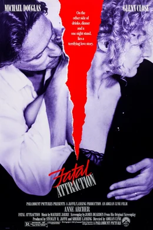

Explore film ↗
Explore film ↗Flashdance
Adrian Lyne
DIRECTOR PROFILE
Adrian Lyne (born 4 March 1941) is an English film director.
LIFE & CAREER
Adrian Lyne (born 4 March 1941) is an English film director. His films are known for sexually charged narratives that explore conflicting passions, the power of seduction, moral ambiguity, betrayal, and the indelibility of infidelity. In the mid 1970s, he directed television commercials for DIM Lingerie (France), before switching to feature-length films in 1980 with Foxes.
Adapted excerpt from Wikipedia, CC BY-SA 4.0. Pronunciation notes omitted.
Read the full biographyImage: Photographer not specified on source profile. Source & rights: Copyrighted photo; no free licence stated ↗.
Profile reference: Director background ↗
Open this director checklist ↗
A selection of this director’s films available in the archive.
Explore film ↗Adrian Lyne

Explore film ↗Adrian Lyne